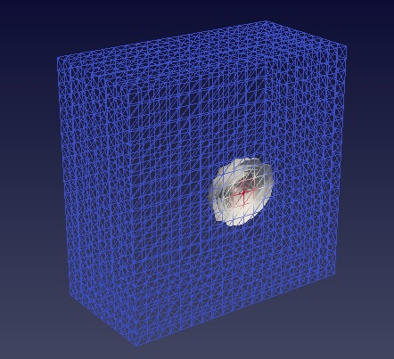
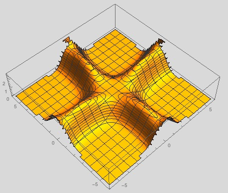

Computation
Human Activity Recognition Analysis: Identifying People Through Motion
-- Based purely on motion data, a smartphone learns to tell who is carrying
it, classifying by user id (0-30). The analysis also shows that people move
in distinct, but related ways.
Decision boundary (99.4% accuracy) of a t-SNE projection to 2D in the
'walking' activity -- the colors are for 30 different people:

ARSNN (Adaptive Random Slow Neural Network) -- A neural network that
learns (partly) by changing structure. This is essentially a toy program
to satisfy my curiosity. Try playing around with it!
Physics
FEniCS BEC -- This is a Python FEniCS script that solves,
self-consistently, the Gross-Pitaevski equation in 1, 2 and 3 dimensions,
to obtain the Bose Einstein Condensate (BEC) ground state, using finite
elements. Finite elements are particularly well suited to solving real-time
nonlinear PDEs in arbitrary geometries.
Cross section of the 3D ground state solution (using ParaView):

Domain Wall Code -- A code in Mathematica that finds the domain
wall solution for a scalar field theory with four different vaccua. It would
be interesting to extend this code to other potentials, to see all of the
spokes on the wheel
.
Energy profile for a topologically stable solution:
